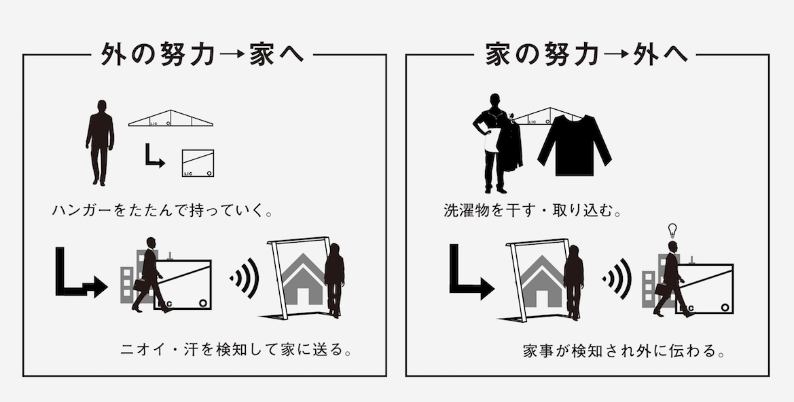
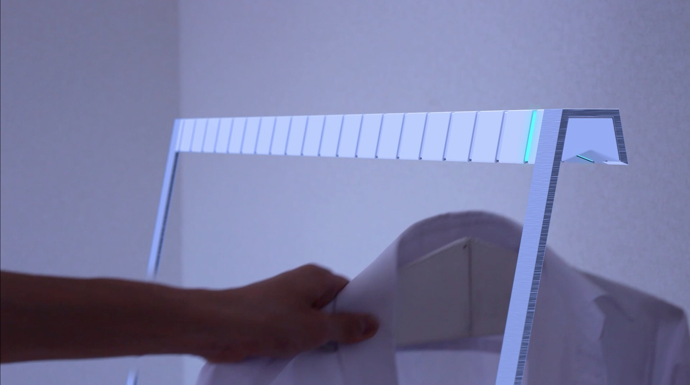
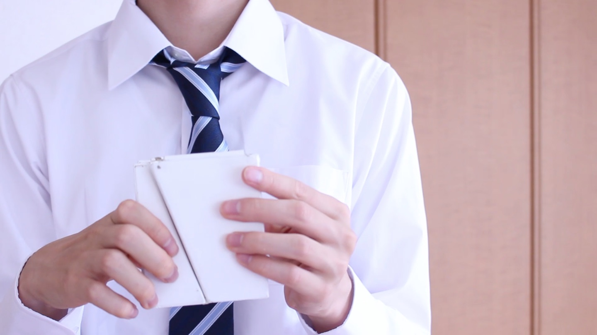
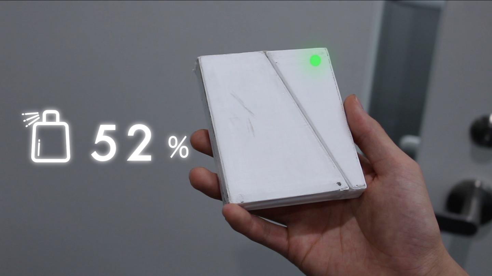

家庭の中と外のコミュニケーションツールとして活用できるポータブルハンガーです。
家底の中と外では、リアルタイムにそれぞれの頑張りを把握することは難しいです。無意識のうちに「やってもらうことが当たり前」になり、ストレスとなっている家庭があると考えました。そこで、頑張りを伝えられる行為として洗濯に着目し、指標として「汗」を利用することにしました。このポータブルハンガーは湿度センサーとにおいセンサーを搭載し、検知した「汗」を親機であるハンガーラックに送信します。一方で、洗濯物がこのハンガーに干されると、その湿度を検知して、外に持ち出されているハンガーに通知します。こうして家庭の中と外での頑張りを交換します。プロトタイプを制作し、センサーからデータを受信し、サーバに送信する仲介アプリケーションの制作を担当しました。また、PVを監督、撮影、編集も並行して行いました。
   